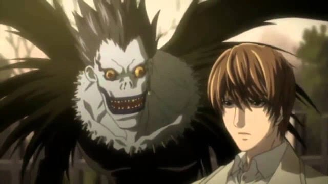

"Death Note" is one of the biggest phenomenons to come from Japan in the 2000's decade: originally a manga, it spawned sequels, prequels, spinoffs and remakes, in the form of anime television and films, novels, video games, musicals, Japanese live-action movies and shows, and as of 2017, a live-action American retelling on Netflix. Even a decade after its creation, it still has a large fanbase and gets revisited for potential reuse. And for me, like many fans, it has a special place, because I think the "Death Note" anime was the first anime series to properly turn me into an anime fan. I had been aware of anime ever since I was a child, growing up with "DragonBall Z," and "Pokemon," and later "Digimon," "Beyblade," and "Yu-Gi-Oh!," each practically defining my generation with their collectable merchandise and cheeky characters. I liked these shows, and they were generally considered cool (despite being in the realm of geek culture alongside comic books and table-top games), but I only was vaguely aware that these came from Japan. I didn't sit at attention at anything and everything anime, as I would come to learn many fans would blindly follow in the pursuit of content. As a teenager, I would commonly turn on YTV on Friday nights (Canada's only source of television anime, and the only appropriate source pre-legal online streaming, which they would phase out in the early 2010's when Canada's English dubbing studios reduced output, replacing programming with disappointing live-action Nickelodean shows, which I responded with by never watching the channel ever again). The anime block was limited, and would consist of shows like "Fullmetal Alchemist," "Eureka Seven," "Witch Hunter Robin," "Inuyasha" and "Gundum Seed Destiny," among others. I vaguely understood what anime was and how it was considered cool in the world of experimental, gritty animation and graffitti-styled hip-hop, but I kept the anime on in the background while I did my homework or played portable video games. I vaguely understood that some had good stories ("Fullmetal Alchemist"), and others had great style ("Eureka Seven"), but these shows ran on repeat and I didn't tune in from the first episode: unlike most television shows in America, subsequent episodes relied on understanding and seeing the story up to that point, making it hard to jump in and follow along well enough to be invested. Anyway, around 2007 or so, I noticed in my family's weekly TV Times in the newspaper that a show called "Death Note" was listed in place where "Fullmetal Alchemist" normally was. A shame, I thought, "Fullmetal" was a good show. But "Fullmetal" played anyway, there was no sign of this mysterious new show. And so, life went on, until a few weeks later when I turned on the TV just as "Fullmetal Alchemist" was to start.... but it didn't start. Instead, I saw a camera quickly panning over a barren grey wasteland, then focusing on ghoulish skeletonal forms, while ominous music played: "Baaaaa-Ba-Ba-Ba-Baaaaa-Ba-Ba-Ba-BWAAAMMM...". I paid attention.The first episode (aired appropriately in October) played like a ghost story, telling of supernatural Gods called "Shinigami" that controled when humans died by writing their names in a notebook at their liesure. On shinigami named Ryuk got bored living in his endless wasteland, only being able to view through windows into the human world to pass the time. So he drops his notebook into the human world to see what happens. A dilligent student named Light Yagami happens to find the book, and the suspicious rules on the first page explaining how to use it to kill people. Surely it's a prank? But sure enough, curiosity gets Light to test it, and he sees firsthand it is very real.Ryuk comes down a few days later to retrieve the notebook. While Light is shocked at Ryuk's appearance, he isn't surprised. And he isn't ready to return the book either: he proudly shows he, unlike most humans, took the initiative and already filled several pages with names. Light sees the book as a power to rid the world of criminals, to act as a God and saviour to the human race. And Ryuk is pleased at the development, happy to watch as Light's plans play out. Ryuk smiles, Light smiles, and looks out to the sunset from his bedroom. "To Be Continued..." shows in the bottom corner of the screen. "More."I assumed I knew where the show would go from here. The show would focus each episode on a random human who may or may not deserve to be killed, and Light be slowly lose his humanity as he cleans up the world one name at a time. Ryuk even gives a pretty big hint at the fact that his own afterlife will be singled out from other humans, practically giving away the ending. But the second episode shows a new development: after weeks of mysterious deaths of prominant criminals, the world's police notice, and assign the task to find the culprit and means behind the incidents to a secretive detective only known as "L." Before the episode is over, he challenges Light (known publically as "Kira") to atone for his crimes, and is able to deduce that he is indeed a citizen living in Japan. This was no longer just a drama into human behavior and the definition of evil. This became a crime-thriller, a cat-and-mouse game between two brilliant minds, each not knowing the name or face of the other, where revealing either could mean their death. And so, the games begin. "MORE."While it certainly helps that I caught the first episode, I have never seen a television show from any country that is so addicting to watch week to week. "Death Note" is a triumph in this regard. Throughout the series, it is thoughtfully written and planned out. In each episode, L might set a plan to narrow down his suspects, and Light might set a trap to prevent himself from being suspected. Each character is careful to not reveal their hand unless necessary. It's like watching a gripping chess match, where each turn could seemingly mean nothing, but could result into a key piece being removed from the board, inching one step closer to an endgame. I've never seen a show that seemed so smart and so engaging, consistently so, for its entire 37-episode run. Now, not everyone will fal for the hook. I know many people who don't understand the hype behind "Death Note." Admittedly, some of the show's machinations become a little ridiculous, despite being relatively grounded compared to other anime. And, without giving anything away, it is inevitable that at least one of the two leads would die by the show's end; one dies about two-thirds through the series, and become replaced by lesser characters to let the story continue. Not only is disappointing (L and Kira MAKE the show, to imagine "Death Note" without either feels insulting), but it shows that it is inevitable that either BOTH the original rivals must die by the end, or else the show could continue forever. It was no longer a matter of who would win, but when they would be caught. If you don't mind this, it doesn't make the second half of the series any less entertaining, and I was still addicted from the first episode to the last. Despite any flaws, "Death Note" has one of the most gripping stories in anime.The visuals also surprised me. You might not think a game of wits involving writing names on paper could look good animated, but Studio Madhouse outdo themselves, exageratting the scenes with dramatic music and fast-moving and varied camera shots. Both the animation and the addtictive storytelling are trademarks of director Tetsuro Araki, who would be a legend after his success with both "Death Note" and "Attack on Titan" (his other shows are also worth a watch if you liked either of these megaliths). The animation doesn't go all out for most of the show, mostly consisting of static shots of talking characters, but when it matters, it hits high. The visuals speak well to the trends of the time: inspired by gothic imagery, characters have bleak expressions and pale skin that frames their menacing eyes, the world is bathed in rain, lighting and demonic sunsets for dramatic lighting. Opportunities to add style, like the design of Ryuk and other shinigami (all taken from the original manga) are put to good visual effect. The opening and ending themes show Light, a handsome man, shirtless and flying down from the sky, surrounded in angel feathers while eating a ssingle red apple. Not subtle. The music perfectly sets the tone, with memorable themes for each type of scene, and attention-grabbing opening and ending themes. The English dub is excellent, in character-defining roles for all actors involved. Is everything over-the-top? A little, but it all adds to the watchability of the series. "Death Note" is much smarter than most anime, but is pure entertainment first and foremost, and is VERY entertaining.After "Death Note" ended, I craved more like it. At the time, Walt Disney and other other American studios had all but given up on traditional 2D animation, so it seemed as though the world was pushing me into watching more Japanese anime. The shows I would watch after "Death Note" would become my timeless favorites, until eventually the quality available had dried up. But it was too late: I was an anime fan, I had watched and owned several shows and would watch many, many more to come. "Death Note" showed me anime could tell stories differently and without fear, and that was exciting. If you haven't seen it yet, at least watch the first two episodes. Viz Media has made it easy to buy either the complete anime or mange very cheaply to speed growth of its audience, so take advantage. Just don't start dressing in black hoodies and black nailpolish while writing alone in a corner into a mysterious notebook, it might give others a bad impression of you.
- "Ani" More reviews can be found at : https://2danicritic.github.io/ Previous review: review_Death_Does_Not_Exist Next review: review_Death_Note_-_R_(Relight),_Visions_of_a_God,_R2_(Relight2),_L's_Successors